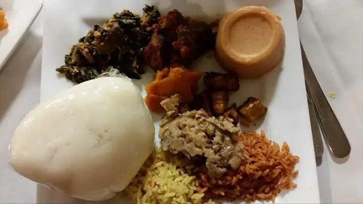

CHOPPINGS

Saturday na for Smag.
Authentic Nigerian dishes, freshly cooked in Awka — jollof, native soups, nkwobi, isi ewu and more.
Special meals in quantity for busy people, families and bachelors who don't have time to cook. Stock your freezer with a bucket of soup, stew or a cooler of rice. Same Saturday delivery, free within our areas, and every bucket counts as a plate toward the promo.

Planning a party, wedding, birthday, meeting, church programme or family event? We cook Nigerian favourites in quantity: jollof and fried rice, native soups and swallow, small chops, proteins and drinks.
Pricing is discussed on WhatsApp based on your menu and number of guests.
Book for your event on WhatsAppPick your dishes and choose an upcoming Saturday and time slot.
Your order summary opens in WhatsApp — send it and we confirm.
Free delivery to your area, or pick up — every Saturday.
Delivery is FREE within these Awka areas:
Nearby spots only — we don't deliver to far locations. Pickup is also available.
We cook and deliver every Saturday. Book any day during the week.
Booking cutoff: Saturday 8:00 AM (Nigeria time). Orders after that go to the following Saturday.
💳 Payment is by bank transfer. After placing your order, request payment details on WhatsApp.
ETHICAL SMAG CHOPPINGS serves home-style Nigerian food in Awka, Anambra State. From smoky jollof and rich native soups to nkwobi, isi ewu and pepper soup, every order is cooked fresh for Saturday delivery or pickup. Book ahead, relax, and let us handle the cooking.
Saturdays only. You can pre-order any day of the week; orders placed before Saturday 8:00 AM (Nigeria time) are for that same Saturday, after that they move to the next Saturday.
Free delivery within (and very close nearby spots). We don't deliver to far locations. Pickup is also available.
Yes — our Bucket & Pot Meals come in medium/large buckets (soups and stew from ₦15,000) and rice coolers (₦15,000–₦30,000). Add them to your cart; they follow the same Saturday delivery and count toward the promo.
Yes — parties, weddings, birthdays, meetings, church and family events. Message us on WhatsApp with your event type, date, number of guests and location; pricing is discussed there.
Yes — delivery is free within our listed areas.
Order or more plates (rice dishes, soups or specials — drinks don't count) and get % off your food plus a . It's applied automatically in the cart.
💳 Payment is by bank transfer. After placing your order, request payment details on WhatsApp.
Yes, message us on WhatsApp before the Saturday 8:00 AM cutoff.
📍 Awka, Anambra State, Nigeria
🕒 Hours & pickup location: Details discussed on WhatsApp when you reach out
Message us on WhatsApp